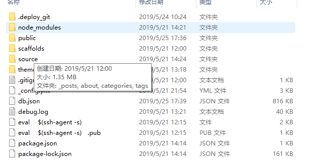

在公司用hexo搭好博客之后，突然有个疑问：我想要回到家继续写文章，那换了电脑之后该怎么更新博客呢？然后就开始智障了。通过谷歌，照着弄了好久，才弄好了。
思路：使用git分支。
准备工作和环境要求
在这之前，首先你得有台电脑是配置好了的，也就是确保你已经使用hexo在github pages上面部署好你的个人博客，并在本地电脑拥有该博客的部署环境，即类似于以下图片的文件目录

对username.github.io仓库新建分支，并克隆
在Github的username.github.io仓库上新建一个xxx分支，并切换到该分支，并在该仓库->Settings->Branches->Default branch中将默认分支设为xxx，save保存；然后将该仓库克隆（必须要用命令行）到本地，进入该username.github.io文件目录。
完成上面步骤后，在当前目录使用Git Bash执行git branch命令查看当前所在分支，应为新建的分支xxx
将本地博客的部署文件拷贝进username.github.io文件目录并提交
将本地博客的部署文件全部拷贝进username.github.io文件目录，将拷贝进来的博客hexo部署环境提交到xxx分支，提交之前需注意：将themes目录以内中的主题的.git目录删除（如果有），因为一个git仓库中不能包含另一个git仓库，提交主题文件夹会失败。
执行git add .、git commit -m 'back up hexo files'（引号内容可改）、git push即可将博客的hexo部署环境提交到GitHub个人仓库的xxx分支。现在可以在GitHub上的*username*.github.io仓库看到两个分支的差异了。
master分支和xxx分支各自保存着一个版本，master分支用于保存博客静态资源，提供博客页面供人访问；xxx分支用于备份博客部署文件，供自己维护更新，保证了两者在一个GitHub仓库内互不冲突。至此你搭配好的电脑上的任务就完成了。
新电脑环境部署和更新
首先你需要安装一下Hexo：
1 | npm install hexo |
然后将新电脑的生成的ssh key添加到GitHub账户上
在新电脑上克隆username.github.io仓库的xxx分支到本地，此时本地git仓库处于xxx分支
切换到username.github.io目录，执行npm install(由于仓库有一个.gitignore文件，里面默认是忽略掉node_modules文件夹的，也就是说仓库的hexo分支并没有存储该目录[也不需要]，所以需要install下.
然后就可以正常的编辑、撰写文章或其他博客更新改动。
依次执行git add .、git commit -m 'back up hexo files'（引号内容可改）、git push指令，保证xxx分支版本最新
执行hexo d -g指令（在此之前，有时可能需要执行hexo clean），完成后就会发现，最新改动已经更新到master分支了，两个分支互不干扰！
注意：每次换电脑进行博客更新时，不管上次在其他电脑有没有更新（就怕更新之后忘了），最好先git pull获取xxx分支的最新版本，之后再进行编辑和提交。反正就是xjb弄就完事了。